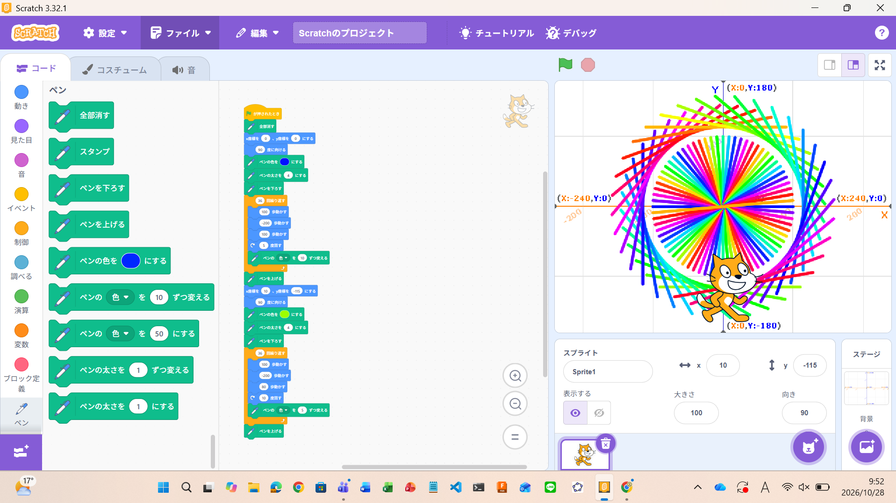
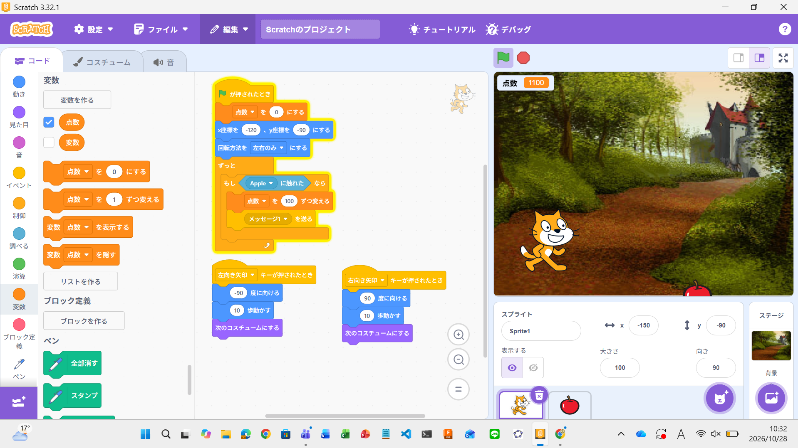

1週目のレポート ： 公大高専１年実習I-1
3b班27番 くま
第1週目
1-1 サイエンスアート

1.内容
猫の移動に合わせて線を描くようにし、猫を直線に動かし、回転させて描いた円と
最初の位置から少し後ろに下げながら回転させて描いた円を組み合わせて作った。
2.感想
プログラムで動かしている内容は単純だが、全体として動かしてみると想像と違っていたりして
すこし難しかった。だが違っているところを少しずつ調整していくところが面白いと感じた。
1-2 ゲーム

1.内容
猫を左右の矢印キーで動かせるようにして、その猫が動くたびにコスチュームを変えて歩いているように見せた。
また、猫がリンゴと重なると得点を100増やし、メッセージを送った。メッセージを受けとった時のプログラムはリンゴの表示をけすようにした。
また、リンゴはランダムなx座標に表示し、そのままのx座標で落下するようにした。
2.感想
プログラムの内容は思っていたよりずっと簡単なもので少し驚いた。
リンゴがランダムに生成するところはわかりやすかったが、その後そのままのx座標のまま落下させるところに少し悩んだ。
1-3 ホームページ作成
私のホームページ
1.内容
githubを利用して、html形式のファイルにあるコードで作られたwebを自分のIDを使ったURLにし、自分のホームページを作成した。
2.感想
はじめてgithubを利用してみたが、今回の学習した内容は思いのほかできた。
githubはいろいろなプログラムが共有されていると聞いたので、ホームページ以外のものも試してみたいと思った。
各ページへのリンク
1週目のレポート
2週目のレポート
3週目のレポート
私のホームページ